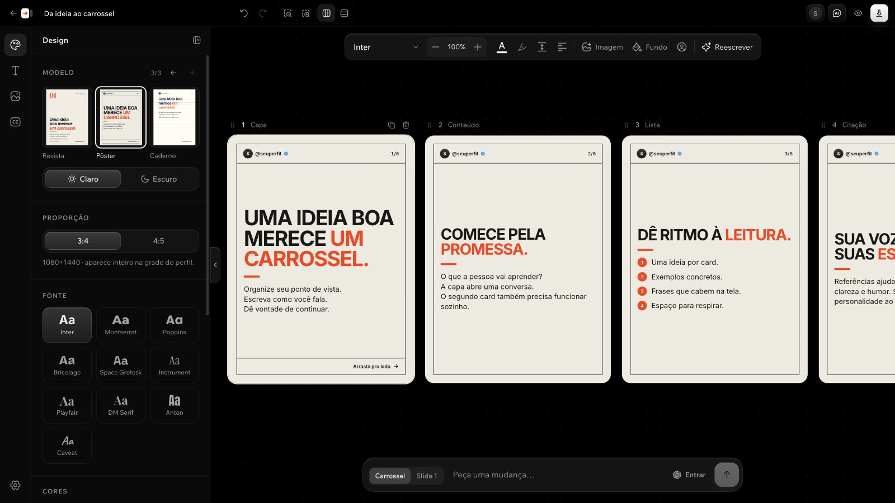

Open source · roda no seu computador
Sua ideia vira carrossel.
Na sua voz.
Sua conta do ChatGPT. Sem cobrança de API.
Comece com uma ideia, prints ou um link acessível. O ChatGPT organiza o conteúdo e escreve no seu estilo. Você dá o acabamento.
Sem chave de API. O uso segue os limites e a disponibilidade do Codex na sua conta.

Instale com um pedido.
Abra o ChatGPT Work ou o Codex
Use um agente com terminal e acesso autorizado ao seu computador.
Cole o pedido abaixo
Ele instala o app e ajuda a configurar seu perfil, sua voz e suas referências.
Entre com sua conta do ChatGPT
No app local, conclua o login oficial e crie seu primeiro carrossel.
Esta página é uma demonstração. Para usar a IA, instale o Arrasta AI localmente e conecte uma conta com acesso ao Codex. A assinatura e seus limites continuam valendo.